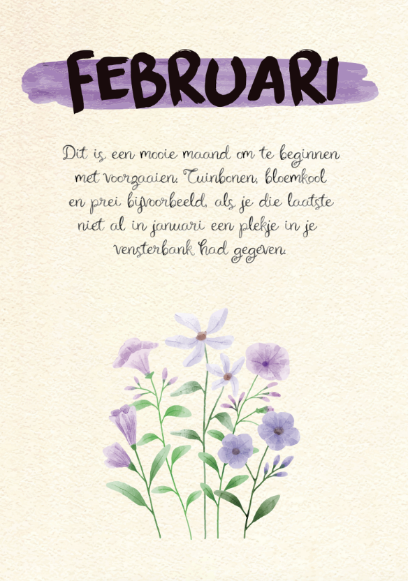
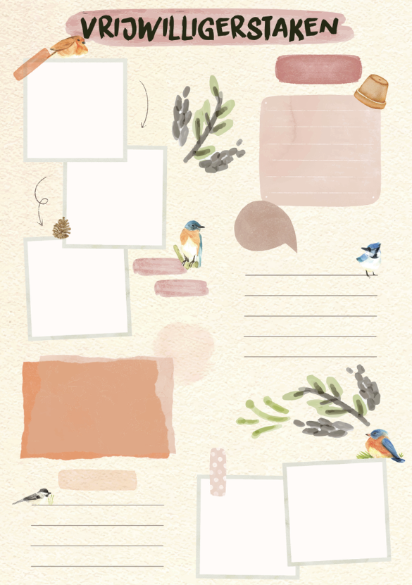
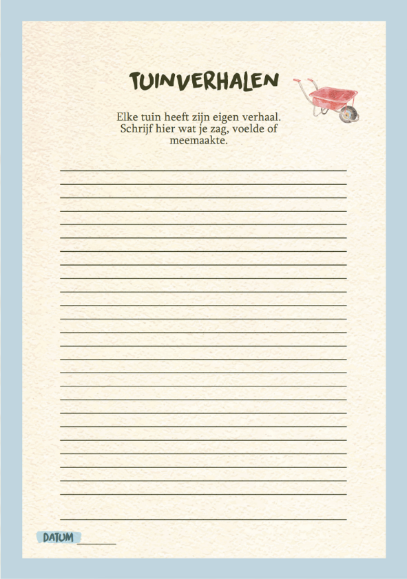

Project context
De Hemkerhof op Amstelglorie is een gemeenschappelijke buurttuin waar ecologie, educatie en eetbaarheid samenkomen. Ondanks het aanbod weten veel bewoners uit het Amstelkwartier de tuin nog niet goed te vinden.
Dit project richt zich op het verlagen van drempels en het stimuleren van betrokkenheid via gedragsontwerp.
Doel
Meer betrokkenheid van bewoners bij de buurttuin stimuleren.
Aanpak
Gedragspsychologie, nudging en design research.
Resultaat
Een seizoensboek als laagdrempelige gedragsinterventie.
Project uitleg
Met behulp van gedrags- en ontwerponderzoek zijn barrières, motivaties en routines van bewoners in kaart gebracht. Op basis hiervan is een interventie ontwikkeld: het Seizoensboek.
Dit product verbindt bewoners op een toegankelijke manier met de Hemkerhof en stimuleert deelname aan activiteiten en tuinwerk.
Seizoensboek



Resultaat
Een gedragsinterventie die lokale betrokkenheid vergroot en bewoners activeert om deel te nemen aan de buurttuin.
Bekijk volledige uitwerking